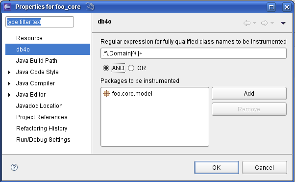

|
|
The selection of classes to be instrumented for TA/TP can be configured from a preferences page in the "db4o" category of the project preferences dialog.
Currently two modes of selection are available:
The default settings for a new project are: No packages OR a catch all (".*") regular expression, i.e. all classes will be instrumented.
In the sample screenshot for the "foo_core" project, all classes inside the foo.core.model package that are prefixed "Domain" will be instrumented.